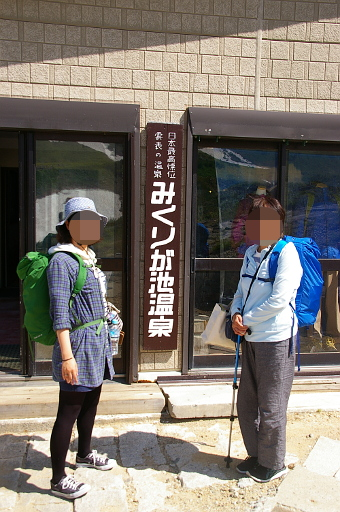
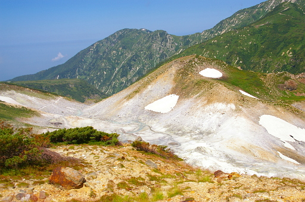
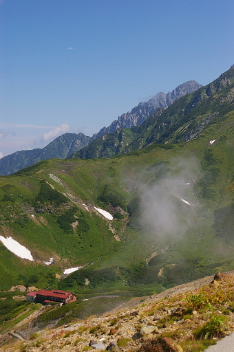
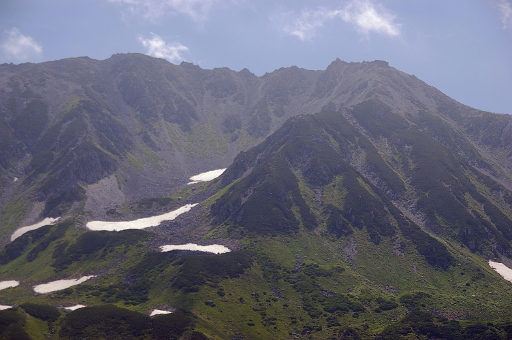
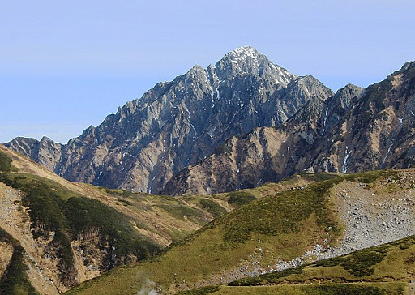

さて、立山室堂への旅行の最終日です。あとはもう帰るだけです。ですがどうしても心残りだったエンマ様のホットピザをみくりが池温泉の喫茶みくりで食べてから帰ることにしました。ソースが激辛で美味しかったです。また食べたい……
そしてみくりが池温泉を出て階段を登り始めたときに娘が「ちょっとまって。写真」と私と妻を呼び止めました。そういえばみくりが池温泉の前で記念写真を撮っていませんでした。なのでちょいちょいと撮影して室堂ターミナルに向けて出発しました。
階段と坂をしばらく登ってエンマ台との分岐に来たところ妻が立ち止まりました。エンマ台方面に行ってみたいとのことなので、3 人揃ってエンマ台に寄り道することにしました。まぁ 50m かそこらの距離なので。
エンマ台からは話に聞いていたとおり地獄谷がよく見渡せました。
ふと地獄谷の上の方を見上げるとなにやら尖った山が顔を覗かせていました。剱岳です。エンマ台からも見えるのかぁと思いながら一応シャッターを切りました。
もう一つエンマ台では見どころがあります。雄山、大汝山、富士の折立、真砂岳に囲まれた山崎カールが見えることです。もちろんシャッターを切りました。
この後は写真を撮ることもなく、やはり立山室堂山荘前のベンチで休憩し、室堂ターミナルまでの途中のベンチでも小休止しながらターミナルまで歩きました。
後はホテル立山のレストランで昼食を取り、お土産を買って、13 時 30 分発の富山駅直行の地鉄バス (富山地方鉄道のことを富山県民は地鉄と呼びますし富山地方鉄道自身も地鉄と呼んでます) に乗って富山駅に向かいました。
バスが曲がりくねった道を下っていくに連れて雄山、大汝山、富士の折立、真砂岳、別山、浄土山などが遠ざかっていきました。ひょっとするともう二度と来ることがないかもと思うとちょっとさみしくなったのはココだけの話です。
バスが天狗平に差し掛かっても剱岳の方は見向きもしませんでした。本当なら天狗平からは下の写真のような劔の姿を拝めるはずなのですが、室堂ターミナルにいた時点で剱岳は雲の中でした。すでに盛夏の山です。夏山です。

Photo: Alpsdake(Own work) [CC BY-SA 4.0], via Wikimedia Commons
後はやることもないのでバスが 16 時に富山駅に着くまでトイレ休憩も無視してずっと寝ていました。
富山からは北陸新幹線で金沢まで行き、在来線のサンダーバードに乗り換え、大阪まで帰って今回の旅を終えたのでした。ちなみにサンダーバードでは車内販売がないですし、金沢駅では新幹線のコンコースから在来線のホームに直接行くことになるので、駅弁を買うなら富山駅で買っておく必要があります。ご注意を。
それではみなさんも良い旅を。
{kind=link}